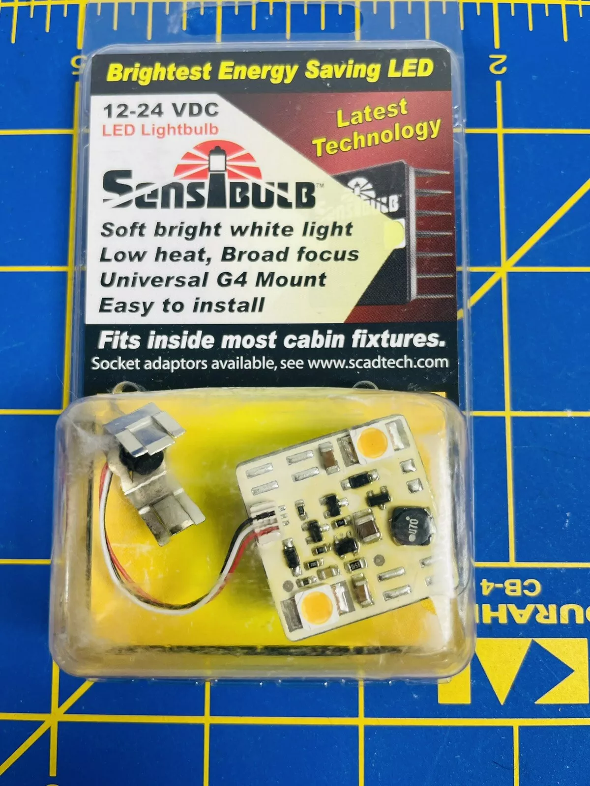

The SensiBulb was released around the year 2000 as LED lighting was relatively new for boats. The main selling feature of this bulb was that it produced warm and pleasant lighting versus the rather cold and harsh lighting that LED lighting was known for. I am not sure if the succeeded but I wanted to take a look at some of the equipment on the light and compare to modern LED technology for boats.
This is an example package of a sensibulb